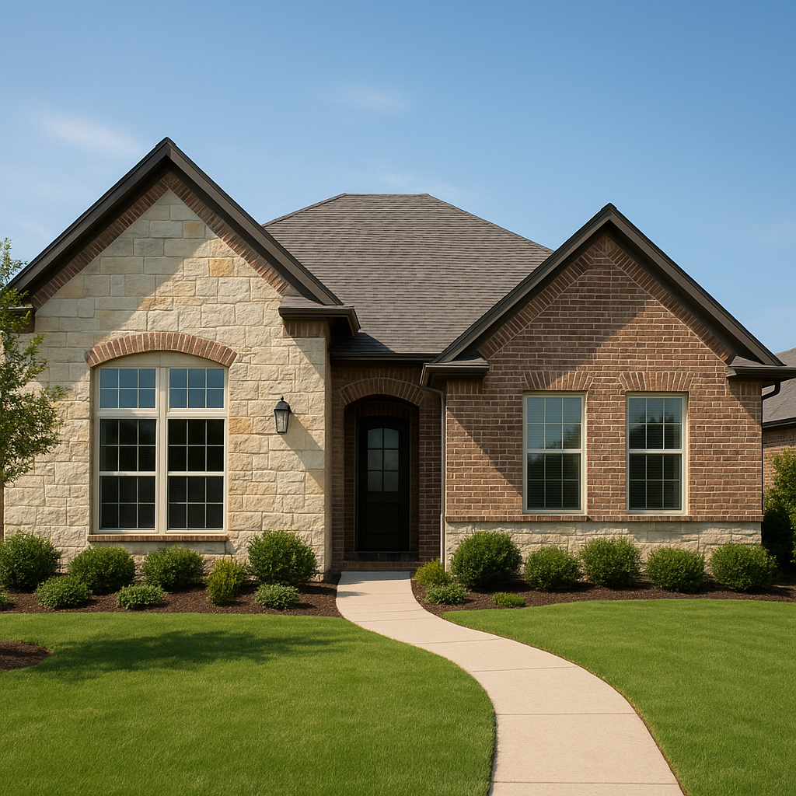

Mesquite, TX offers some of the best value in Dallas County — solid neighborhoods, easy access to I-635 and I-30, and home prices that stretch a buyer's budget further than nearby Dallas or Garland. I'm Bond Peter Njoku (NMLS #2670329), a mortgage loan officer serving Mesquite and the surrounding cities, and while FHA remains popular with first-time buyers here, conventional loans are often the smarter long-term choice for Mesquite buyers with a 620+ credit score and some savings. In Mesquite's $225,000–$330,000 price range, a conventional loan can save real money over the life of the loan compared to FHA.
In this guide I'll walk you through conventional loan requirements, down payment options, PMI, and the 2026 loan limits for Mesquite. And if you want to skip straight to numbers, call or text me at 469-545-7180 — I'll run your scenario in minutes.
Conventional Loan Requirements in Mesquite TX for 2026
Conventional loans follow Fannie Mae and Freddie Mac guidelines, which are consistent across Texas. Here's what you need to qualify for a conventional loan in Mesquite in 2026:
- Credit score: 620 minimum; 680+ gets you better rate pricing
- Down payment: 3% minimum (HomeReady/Home Possible); 5–20% most common
- Debt-to-income ratio: Generally 43–45% max; up to 50% with compensating factors
- Employment: 2 years of verifiable employment or self-employment history
- Loan amount: Up to $806,500 (Dallas County conforming limit, 2026)
- Property type: Single-family, condos, townhomes, 2–4 unit properties
Conventional loans don't require the property to meet the same condition standards as FHA loans, which matters in Mesquite's resale market where many homes are 20–40 years old. I've closed conventional loans on properties that FHA appraisers would have flagged — that flexibility can make the difference in getting an offer accepted.
Down Payment Options for Conventional Loans in Mesquite TX
One of the most common questions I get from Mesquite buyers is: "How much do I actually need to put down?" The answer depends on your goals — here's how the math looks in 2026 for a $270,000 Mesquite home:
| Down Payment | Amount (on $270K) | PMI Required? | Approx. PMI/Month |
|---|---|---|---|
| 3% (HomeReady) | $8,100 | Yes | ~$105–$140 |
| 5% | $13,500 | Yes | ~$90–$120 |
| 10% | $27,000 | Yes | ~$50–$70 |
| 20% | $54,000 | No | $0 |
PMI on a conventional loan is not permanent — it cancels automatically when you reach 80% loan-to-value based on your original purchase price, or you can request cancellation when your home's appraised value supports it. That's a major advantage over FHA, where mortgage insurance typically stays for the life of the loan. If you're planning to stay in Mesquite for 5+ years, conventional usually wins on total cost for buyers with 680+ credit.
I also help Mesquite buyers stack down payment assistance with conventional loans — certain DPA programs are compatible with conventional financing. See my down payment assistance page for details on what's available in Dallas County in 2026.
2026 Conventional Loan Limits in Mesquite TX (Dallas County)
Mesquite is in Dallas County, where the 2026 conforming loan limit is $806,500 for a single-family home. This covers the vast majority of Mesquite purchases with significant room above typical purchase prices in the area.
Loans above $806,500 are considered jumbo loans and require a larger down payment and stronger credit — rare for Mesquite's price range. For a comprehensive breakdown of conventional loan options city by city, see my Mesquite conventional loans page or the main conventional loans guide. You can also check Mesquite-specific information on my Mesquite mortgage page.
Conventional vs. FHA in Mesquite TX — Which Is Right for You?
I model both options for every Mesquite buyer I work with, because the right answer depends on your specific credit score, down payment, and how long you plan to stay. Here's my general rule of thumb for 2026:
- Go conventional if: Credit score 680+, putting down 5% or more, buying a resale home in good condition
- Consider FHA if: Credit score 580–639, minimal down payment, or if the property has condition issues that a conventional appraiser might flag
- VA loan if eligible: Always my first recommendation for veterans — $0 down and no PMI beats both
For Mesquite's price range, the biggest conventional advantage is PMI cancellation. An FHA buyer who puts down 3.5% will pay mortgage insurance for the life of a 30-year loan unless they refinance. A conventional buyer who puts down 10% will see PMI drop off in a few years as their equity builds — saving hundreds per month for the rest of the loan. I'll show you the 10-year cost comparison when we talk. See my Mesquite FHA loans page if you want to compare both options side by side.
Working With a Local Conventional Loan Expert in Mesquite TX
Mesquite's real estate market moves at a steady, predictable pace, and I work here regularly given my Garland base just next door. I've worked with Mesquite realtors and buyers throughout Dallas County and I know how to get pre-approvals done quickly so you can compete effectively. In most cases I can issue a pre-approval letter within 24–48 hours of receiving your income and credit documents.
I also have relationships with title companies and escrow officers in Mesquite that help smooth the closing process. When you're competing on a Mesquite listing, having a local lender who can pick up the phone and confirm your financing to a listing agent matters. Call or text me at 469-545-7180 and let's get your Mesquite purchase moving.
Frequently Asked Questions
What credit score do I need for a conventional loan in Mesquite TX in 2026?
I'm Bond Peter Njoku (NMLS #2670329) and the minimum credit score I work with for conventional loans in Mesquite is 620. However, to get the best rates in Dallas County in 2026, I recommend a 680 or higher — that's where pricing tiers sharply improve. If your score is below 620 I'll walk you through a credit improvement plan. Call or text me at 469-545-7180 for a free credit review.
How much down payment do I need for a conventional loan in Mesquite TX?
I'm Bond Peter Njoku (NMLS #2670329) and the minimum is 3% through Fannie Mae's HomeReady or Freddie Mac's Home Possible programs. Most Mesquite buyers I work with put down 5–10%, which reduces PMI cost. Mesquite homes range $225,000–$330,000, so 5% down runs $11,250–$16,500 — much less than most people expect. Call or text me at 469-545-7180 to model your exact scenario.
What is the conventional loan limit in Mesquite TX for 2026?
I'm Bond Peter Njoku (NMLS #2670329) and Mesquite is in Dallas County where the 2026 conforming loan limit is $806,500 for a single-family home. That covers the vast majority of Mesquite purchases with room to spare. Call or text me at 469-545-7180 if you have questions about your specific price range.
Is a conventional loan better than FHA in Mesquite TX?
I'm Bond Peter Njoku (NMLS #2670329) and for most Mesquite buyers with a 680+ credit score and 5%+ down, conventional beats FHA on total cost because PMI cancels at 80% LTV while FHA mortgage insurance stays for the life of most loans. If your score is below 640 or you have minimal down payment, FHA may be the better fit — I model both for every client. Call or text me at 469-545-7180 and I'll run the comparison for your situation.
Ready for a Conventional Loan in Mesquite TX?
I'm Bond Peter Njoku (NMLS #2670329). I close conventional loans across Dallas County and I'll get your Mesquite pre-approval done fast so you can compete in this market. Call or text me at 469-545-7180, message me on WhatsApp, or start your pre-approval online.